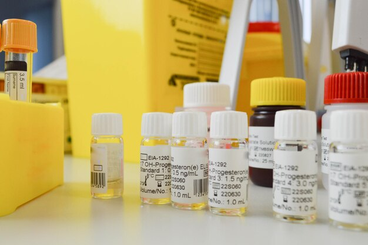

Limbah medis kimiawi merupakan jenis limbah yang dihasilkan dari kegiatan medis dan mengandung bahan kimia berbahaya seperti cairan reagen. Limbah ini memerlukan penanganan khusus karena dapat menimbulkan dampak negatif yang signifikan terhadap kesehatan manusia dan lingkungan jika tidak dikelola dengan baik.
Perencanaan
Melakukan identifikasi jenis dan karakteristik limbah kimiawi yang dihasilkan, seperti keasaman, alkalinitas, toksisitas, dan reaktivitas, lalu mengevaluasi potensi bahaya yang dapat ditimbulkan oleh limbah, termasuk risiko kebakaran, ledakan, dan pencemaran. Memilih metode pengolahan yang sesuai dengan sifat limbah, misalnya netralisasi, pengendapan, atau insinerasi. Membuat prosedur standar operasional (SOP) yang jelas dan detail untuk setiap tahapan pengelolaan dan menentukan sumber daya yang dibutuhkan, seperti tenaga kerja, peralatan, dan anggaran.
Pelaksanaan
Mengumpulkan limbah kimiawi secara terpisah dan aman menggunakan wadah yang tertutup rapat dan bertanda khusus. Menyimpan limbah kimiawi di tempat yang aman, terkunci, dan terpisah dari limbah medis lainnya. Mengangkut limbah kimiawi menggunakan kendaraan khusus yang dilengkapi dengan peralatan keselamatan yang memadai dan melakukan pengolahan limbah kimiawi sesuai dengan metode yang telah dipilih, misalnya dengan cara netralisasi, pengendapan, atau insinerasi.
Evaluasi dan Dokumentasi
Melakukan monitoring secara berkala terhadap proses pengelolaan limbah kimiawi. Mengevaluasi kinerja pengelolaan limbah secara berkala untuk mengidentifikasi kekurangan dan mencatat semua aktivitas pengelolaan limbah, termasuk jenis limbah, jumlah, metode pengolahan, dan hasil evaluasi.
Pelaporan
Menyusun laporan berkala mengenai hasil pengelolaan limbah kimiawi kepada pihak yang berwenang dan menyusun laporan akhir yang berisi rangkuman keseluruhan kegiatan pengelolaan limbah.
Dampak Negatif Limbah Kimiawi
Limbah kimiawi, terutama dari sektor medis, mengandung berbagai zat berbahaya yang dapat menimbulkan dampak negatif yang signifikan terhadap kesehatan manusia dan lingkungan jika tidak dikelola dengan benar. Berikut beberapa dampak negatif yang mungkin timbul:
Dampak Kesehatan
Paparan jangka panjang terhadap bahan kimia berbahaya dalam limbah medis dapat meningkatkan risiko berbagai penyakit kronis seperti kanker, gangguan reproduksi, kerusakan organ, dan gangguan sistem saraf.
Dampak Lingkungan
Beberapa zat kimia dalam limbah medis bersifat persisten dan dapat terakumulasi dalam tubuh organisme hidup melalui rantai makanan, sehingga mengancam kesehatan manusia dan satwa liar.
Efek Jangka Panjang pada Lingkungan
Limbah kimiawi dapat merusak ekosistem alami, mengganggu keseimbangan ekosistem, dan menyebabkan penurunan keanekaragaman hayati.
Penanganan Limbah Kimiawi
Limbah kimiawi, terutama dari sektor medis, mengandung berbagai zat berbahaya yang berpotensi mencemari lingkungan dan membahayakan kesehatan manusia. Oleh karena itu, penanganan limbah kimiawi harus dilakukan dengan sangat hati-hati dan mengikuti prosedur yang tepat.
Identifikasi dan Klasifikasi
Mengenali jenis dan karakteristik limbah kimiawi yang dihasilkan, seperti keasaman, alkalinitas, toksisitas, dan reaktivitas. Mengelompokkan limbah berdasarkan sifat bahaya dan persyaratan pengelolaan.
Pengumpulan dan Penyimpanan
Menggunakan wadah yang terbuat dari bahan yang tahan terhadap korosi dan bertanda bahaya yang jelas. Menyimpan limbah dalam kondisi tertutup rapat untuk mencegah kebocoran dan penguapan, kemudian menempatkan wadah penyimpanan di tempat yang aman, kering, sejuk, dan jauh dari sumber panas.
Pengangkutan
Menggunakan kendaraan khusus yang dirancang khusus untuk mengangkut limbah berbahaya dan Melengkapi dokumen pengiriman limbah yang berisi informasi lengkap tentang jenis, jumlah, dan tujuan pengiriman.
Pengolahan
Limbah kimiawi harus diolah dengan cara yang aman, seperti:
- Netralisasi: Menetralkan sifat asam atau basa dari limbah kimiawi.
- Pengendapan: Mengendapkan zat padat yang terkandung dalam limbah kimiawi.
- Insinerasi: Membakar limbah pada suhu tinggi untuk menghancurkan zat berbahaya.
- Pengolahan Biologis: Menggunakan mikroorganisme untuk mengurai zat organik dalam limbah.
- Metode Lain: Tergantung pada jenis dan sifat limbah, metode pengolahan lain yang dapat digunakan seperti adsorpsi, ekstraksi, dan membran.
Pembuangan Akhir
Tempat Membuang limbah ke tempat pembuangan akhir yang dirancang khusus untuk limbah berbahaya.
Teknologi dan Inovasi dalam Pengelolaan Limbah
Pengelolaan limbah kimiawi merupakan tantangan besar yang membutuhkan solusi inovatif dan teknologi canggih. Seiring dengan berkembangnya ilmu pengetahuan dan teknologi, berbagai metode baru terus dikembangkan untuk mengatasi masalah ini. Berikut adalah beberapa teknologi dan inovasi yang telah dan sedang dikembangkan dalam pengelolaan limbah kimiawi seperti:
Bioremediasi
Menggunakan mikroorganisme untuk mengurai zat berbahaya dalam limbah menjadi zat yang tidak berbahaya. Teknologi ini ramah lingkungan dan dapat digunakan untuk mengolah berbagai jenis limbah organik.
Phytoremediasi
Menggunakan tanaman untuk menyerap dan mengakumulasi polutan dari tanah atau air. Tumbuhan hiperakumulator memiliki kemampuan menyerap logam berat dalam jumlah yang tinggi.
Landfilling
Pembuangan limbah ke tempat penimbunan akhir yang dirancang khusus. Teknologi liner geomembran dan sistem drainase telah meningkatkan keamanan tempat penimbunan akhir.
Tantangan dalam Pengelolaan Limbah Kimiawi
Pengelolaan limbah kimiawi merupakan isu kompleks yang memerlukan perhatian serius. Meskipun telah banyak kemajuan dalam teknologi pengolahan limbah, masih ada sejumlah tantangan yang perlu diatasi. Berikut adalah beberapa tantangan utama dalam pengelolaan limbah kimiawi:
1. Limbah kimiawi memiliki komposisi yang sangat beragam, mulai dari senyawa organik sederhana hingga senyawa anorganik yang kompleks. Hal ini menyulitkan dalam pemilihan metode pengolahan yang tepat dan limbah kimiawi bersifat korosif, mudah terbakar, reaktif, atau beracun, sehingga memerlukan penanganan khusus dan peralatan keselamatan yang memadai.
2. Fasilitas Pengolahan tidak semua daerah memiliki fasilitas pengolahan limbah kimiawi yang memadai dan Jaringan pengumpulan limbah belum terintegrasi dengan baik, terutama di daerah terpencil.
3. Keterampilan Khusus membutuhkan tenaga kerja yang terlatih dan memiliki keterampilan dalam menangani limbah berbahaya dan Jumlah tenaga kerja yang memiliki kualifikasi tersebut seringkali terbatas.
Penutup
Pengelolaan limbah kimiawi merupakan tantangan global yang membutuhkan solusi inovatif. Dengan perkembangan teknologi yang pesat, kita memiliki peluang untuk mengatasi masalah ini dan menciptakan lingkungan yang lebih bersih dan sehat. Penting untuk terus melakukan penelitian dan pengembangan teknologi baru, serta meningkatkan kesadaran masyarakat tentang pentingnya pengelolaan limbah yang baik.